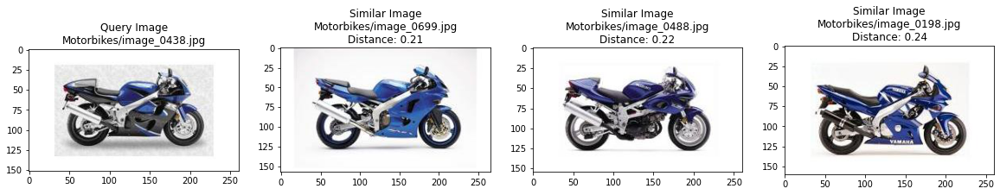
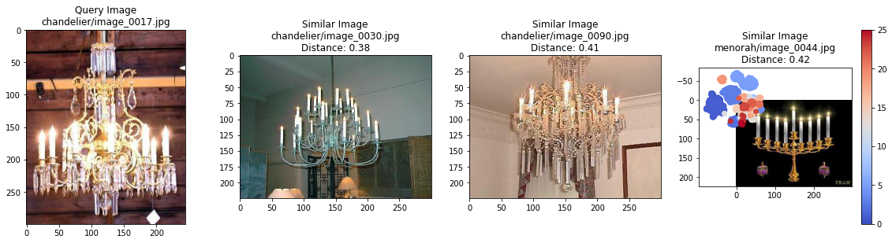
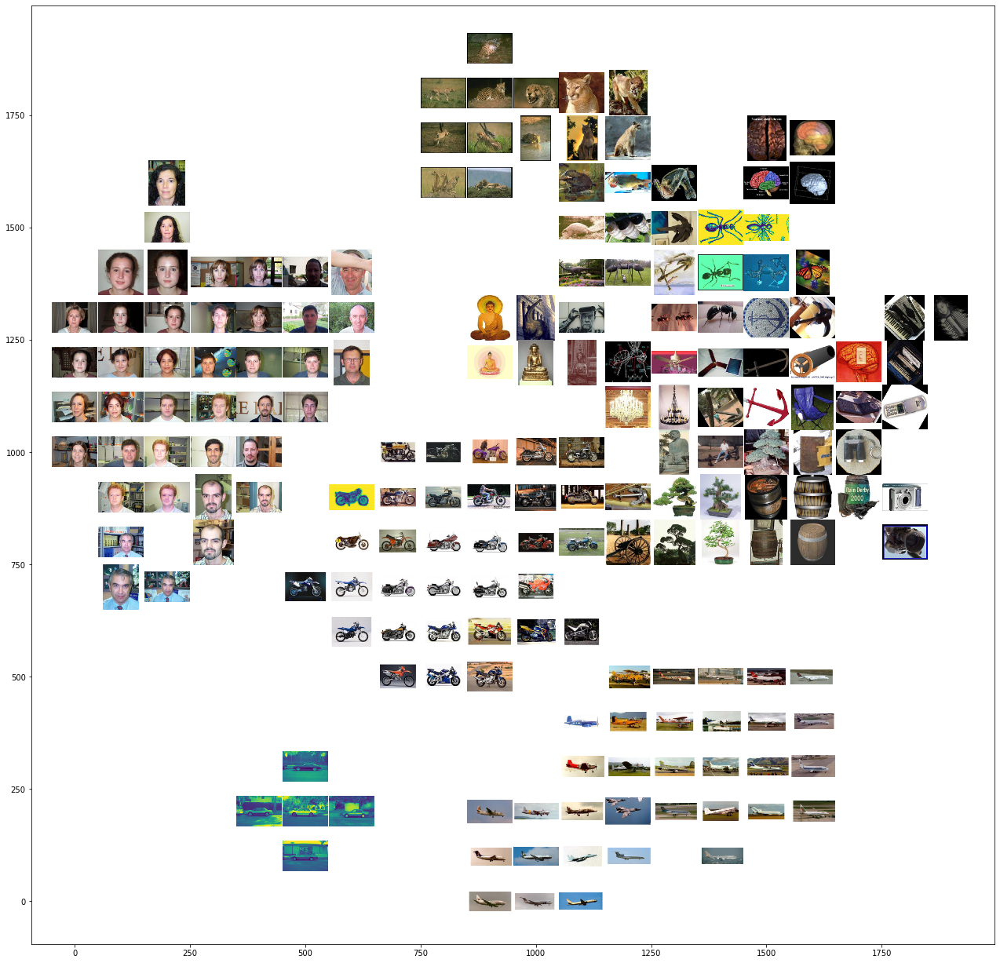
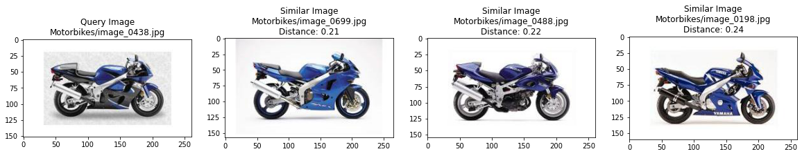
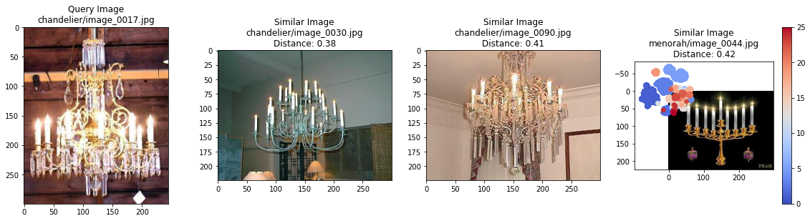
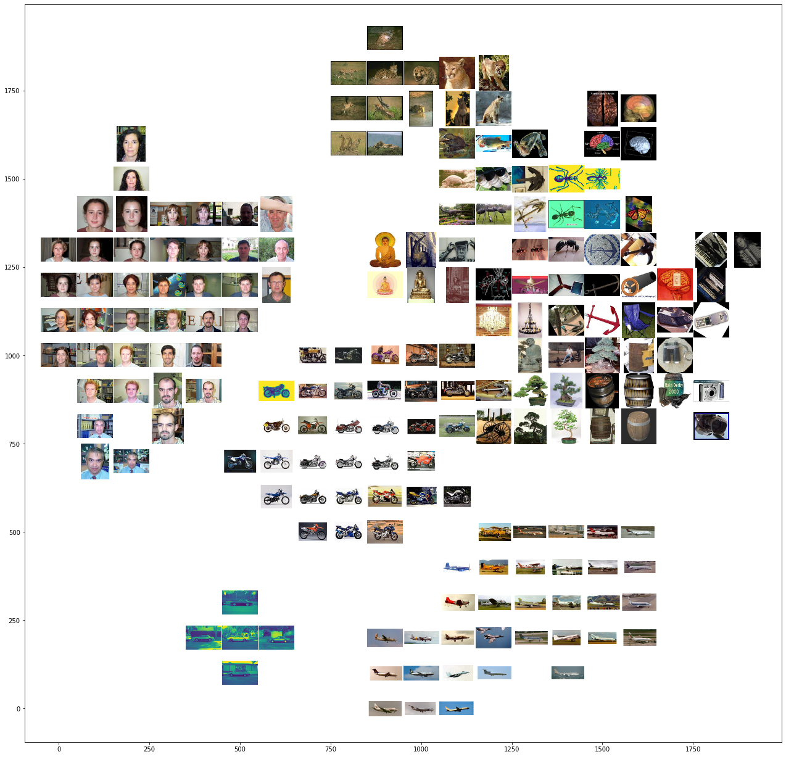

Image Analysis with Tensorflow¶
Applying image analytics and computer vision methods using Tensorflow
import tensorflow as tf
from tensorflow.keras.applications.resnet50 import preprocess_input, decode_predictions
from tensorflow.keras.preprocessing import image
import numpy as np
import matplotlib.pyplot as plt
!curl https://raw.githubusercontent.com/PracticalDL/Practical-Deep-Learning-Book/master/sample-images/cat.jpg --output cat.jpg
IMG_PATH = 'cat.jpg'
% Total % Received % Xferd Average Speed Time Time Time Current
Dload Upload Total Spent Left Speed
100 661k 100 661k 0 0 2321k 0 --:--:-- --:--:-- --:--:-- 2329k
# data loading
img = image.load_img(IMG_PATH, target_size=(224, 224))
plt.imshow(img)
plt.show()
# model loading
model = tf.keras.applications.resnet50.ResNet50()
# inference pipe
def predict(img_path):
img = image.load_img(img_path, target_size=(224, 224))
model = tf.keras.applications.resnet50.ResNet50()
img_array = image.img_to_array(img)
img_batch = np.expand_dims(img_array, axis=0)
img_preprocessed = preprocess_input(img_batch)
prediction = model.predict(img_preprocessed)
print(decode_predictions(prediction, top=3)[0])
# inference
predict(IMG_PATH)
Downloading data from https://storage.googleapis.com/download.tensorflow.org/data/imagenet_class_index.json
40960/35363 [==================================] - 0s 0us/step
[('n02123045', 'tabby', 0.56817275), ('n02124075', 'Egyptian_cat', 0.22223157), ('n02123159', 'tiger_cat', 0.061033953)]
!pip install tf-explain
from tf_explain.core.grad_cam import GradCAM
from tf_explain.core.occlusion_sensitivity import OcclusionSensitivity
from tf_explain.core.activations import ExtractActivations
import matplotlib.image as mpimg
from matplotlib import rcParams
import requests
%matplotlib inline
%reload_ext tensorboard
def download_sample_image(filename):
url = f'https://raw.githubusercontent.com/PracticalDL/Practical-Deep-Learning-Book/master/sample-images/{filename}'
open(filename, 'wb').write(requests.get(url).content)
IMAGE_PATHS = ['dog.jpg', 'cat.jpg']
for each_filename in IMAGE_PATHS:
download_sample_image(each_filename)
def display_images(paths):
# figure size in inches optional
rcParams['figure.figsize'] = 11 ,8
# read images
img_A = mpimg.imread(paths[0])
img_B = mpimg.imread(paths[-1])
# display images
fig, ax = plt.subplots(1,2)
ax[0].imshow(img_A);
ax[1].imshow(img_B);
model.summary()
indices = [263, 281]
layers_name = ['activation_6']
from IPython.display import Image
for i in range(len(IMAGE_PATHS)):
each_path = IMAGE_PATHS[i]
index = indices[i]
img = tf.keras.preprocessing.image.load_img(each_path,
target_size=(224, 224))
img = tf.keras.preprocessing.image.img_to_array(img)
data = ([img], None)
# Define name with which to save the result as
name = each_path.split("/")[-1].split(".jpg")[0]
#Save the Grad Cam visualization
explainer = GradCAM()
# model = tf.keras.applications.vgg16.VGG16(weights='imagenet',
# include_top=True)
# grid = explainer.explain(data, model, index, 'conv5_block3_add')
# explainer.save(grid, '.', name + 'grad_cam.png')
# display_images([each_path, name + 'grad_cam.png'])
Building a Custom Classifier in Keras with Transfer Learning¶
Organize the data: Download labeled images of cats and dogs from Kaggle. Then divide the images into training and validation folders.
Set up the configuration: Define a pipeline for reading data, including preprocessing the images (e.g. resizing) and batching multiple images together.
Load and augment the data: In the absence of a ton of training images, make small changes (augmentation) like rotation, zooming, etc to increase variation in training data.
Define the model: Take a pre-trained model, remove the last few layers, and append a new classifier layer. Freeze the weights of original layers (i.e. make them unmodifiable). Select an optimizer algorithm and a metric to track (like accuracy).
Train and test: Start training for a few iterations. Save the model to eventually load inside any application for predictions.
!wget -x 'https://storage.googleapis.com/kagglesdsdata/competitions/3362/31148/train.zip?GoogleAccessId=web-data@kaggle-161607.iam.gserviceaccount.com&Expires=1608793667&Signature=IUAf0shLM4frn2DhvD8F2%2BD2Uk6hTZYV%2FMF3XkK7DFzYTZ5yGQS%2B4wf5eVe8DnZGjuVl0Gc30TpPoO%2B7uOL9DkUdKG8aUvcgfBVLS6nMadrUqawPyW1ODxz16tKIbKCmT8gLhff0ORDeN1H9Y0JjPu3pepAGZ8Nr0fktZOyI8ONQjW2h0c%2B%2FjnW9ayVtLQy4fZdaTlbU4rpTWTlahg2lI0eX57giPswH%2B%2F7lSJtfaCvDOVrOQFTer%2FqR%2F%2BFf73ynHH6zrJae9%2BrUd4lZ9XINqhfAZ%2FYfnC7HR%2F5%2FJ2TOnGr1%2FD4L6jckSm0RKEbizk%2BiWm%2FnnkTgLFkmpKvmYAotpA%3D%3D&response-content-disposition=attachment%3B+filename%3Dtrain.zip' -O train.zip
!unzip train.zip
%mv train data
%cd data
%mkdir train val
%mkdir train/cat train/dog
%mkdir val/cat val/dog
%ls | grep cat | sort -R | head -250 | xargs -I {} mv {} train/cat/
%ls | grep dog | sort -R | head -250 | xargs -I {} mv {} train/dog/
%ls | grep cat | sort -R | head -250 | xargs -I {} mv {} val/cat/
%ls | grep dog | sort -R | head -250 | xargs -I {} mv {} val/dog/
import tensorflow as tf
from tensorflow.keras.preprocessing.image import ImageDataGenerator
from tensorflow.keras.models import Model
from tensorflow.keras.layers import Input, Flatten, Dense, Dropout, GlobalAveragePooling2D
from tensorflow.keras.applications.mobilenet import MobileNet, preprocess_input
import math
TRAIN_DATA_DIR = 'train/'
VALIDATION_DATA_DIR = 'val/'
TRAIN_SAMPLES = 500
VALIDATION_SAMPLES = 500
NUM_CLASSES = 2
IMG_WIDTH, IMG_HEIGHT = 224, 224
BATCH_SIZE = 64
# load and augment
train_datagen = ImageDataGenerator(preprocessing_function=preprocess_input,
rotation_range=20,
width_shift_range=0.2,
height_shift_range=0.2,
zoom_range=0.2)
val_datagen = ImageDataGenerator(preprocessing_function=preprocess_input)
train_generator = train_datagen.flow_from_directory(TRAIN_DATA_DIR,
target_size=(IMG_WIDTH, IMG_HEIGHT),
batch_size=BATCH_SIZE,
shuffle=True,
seed=12345,
class_mode='categorical')
validation_generator = val_datagen.flow_from_directory(VALIDATION_DATA_DIR,
target_size=(IMG_WIDTH, IMG_HEIGHT),
batch_size=BATCH_SIZE,
shuffle=False,
class_mode='categorical')
Found 500 images belonging to 2 classes.
Found 500 images belonging to 2 classes.
# define the model
def model_maker():
base_model = MobileNet(include_top=False,
input_shape=(IMG_WIDTH, IMG_HEIGHT, 3))
for layer in base_model.layers[:]:
layer.trainable = False
input = Input(shape=(IMG_WIDTH, IMG_HEIGHT, 3))
custom_model = base_model(input)
custom_model = GlobalAveragePooling2D()(custom_model)
custom_model = Dense(64, activation='relu')(custom_model)
custom_model = Dropout(0.5)(custom_model)
predictions = Dense(NUM_CLASSES, activation='softmax')(custom_model)
return Model(inputs=input, outputs=predictions)
model = model_maker()
model.compile(loss='categorical_crossentropy',
optimizer=tf.keras.optimizers.Adam(0.001),
metrics=['acc'])
model.fit_generator(
train_generator,
steps_per_epoch=math.ceil(float(TRAIN_SAMPLES) / BATCH_SIZE),
epochs=10,
validation_data=validation_generator,
validation_steps=math.ceil(float(VALIDATION_SAMPLES) / BATCH_SIZE))
Downloading data from https://storage.googleapis.com/tensorflow/keras-applications/mobilenet/mobilenet_1_0_224_tf_no_top.h5
17227776/17225924 [==============================] - 0s 0us/step
/usr/local/lib/python3.6/dist-packages/tensorflow/python/keras/engine/training.py:1844: UserWarning: `Model.fit_generator` is deprecated and will be removed in a future version. Please use `Model.fit`, which supports generators.
warnings.warn('`Model.fit_generator` is deprecated and '
Epoch 1/10
8/8 [==============================] - 10s 1s/step - loss: 0.6152 - acc: 0.7046 - val_loss: 0.1330 - val_acc: 0.9600
Epoch 2/10
8/8 [==============================] - 8s 967ms/step - loss: 0.1959 - acc: 0.9272 - val_loss: 0.0917 - val_acc: 0.9700
Epoch 3/10
8/8 [==============================] - 8s 966ms/step - loss: 0.1757 - acc: 0.9311 - val_loss: 0.0877 - val_acc: 0.9700
Epoch 4/10
8/8 [==============================] - 8s 983ms/step - loss: 0.0866 - acc: 0.9659 - val_loss: 0.0798 - val_acc: 0.9800
Epoch 5/10
8/8 [==============================] - 8s 967ms/step - loss: 0.0964 - acc: 0.9626 - val_loss: 0.0747 - val_acc: 0.9760
Epoch 6/10
8/8 [==============================] - 8s 961ms/step - loss: 0.0674 - acc: 0.9639 - val_loss: 0.0804 - val_acc: 0.9740
Epoch 7/10
8/8 [==============================] - 8s 964ms/step - loss: 0.0842 - acc: 0.9695 - val_loss: 0.0812 - val_acc: 0.9760
Epoch 8/10
8/8 [==============================] - 8s 968ms/step - loss: 0.0687 - acc: 0.9613 - val_loss: 0.0745 - val_acc: 0.9800
Epoch 9/10
8/8 [==============================] - 8s 965ms/step - loss: 0.0756 - acc: 0.9677 - val_loss: 0.0778 - val_acc: 0.9740
Epoch 10/10
8/8 [==============================] - 8s 967ms/step - loss: 0.0353 - acc: 0.9905 - val_loss: 0.0720 - val_acc: 0.9780
<tensorflow.python.keras.callbacks.History at 0x7f20a68ae588>
model.save('model.h5')
!ls /content/data
# inference
from tensorflow.keras.models import load_model
from tensorflow.keras.preprocessing import image
import numpy as np
model = load_model('model.h5')
img_path = 'cat.jpg'
img = image.load_img(img_path, target_size=(224, 224))
img_array = image.img_to_array(img)
expanded_img_array = np.expand_dims(img_array, axis=0)
preprocessed_img = expanded_img_array / 255. # Preprocess the image
prediction = model.predict(preprocessed_img)
print(prediction)
print(validation_generator.class_indices)
Result Analysis
import tensorflow as tf
import numpy as np
from tensorflow.keras.preprocessing.image import ImageDataGenerator
from tensorflow.keras.applications.mobilenet import MobileNet, preprocess_input
import matplotlib
import matplotlib.pyplot as plt
import matplotlib.image as mpimg
%matplotlib inline
from tensorflow.keras.models import load_model
from tensorflow.keras.utils import CustomObjectScope
from tensorflow.keras.initializers import glorot_uniform
with CustomObjectScope(
{'GlorotUniform': glorot_uniform()}):
model = load_model('model.h5')
# Let's view the names of the files
filenames = validation_generator.filenames
print(len(filenames))
print(filenames[:10])
# Let's check what the ground truth looks like
ground_truth = validation_generator.classes
print(ground_truth[:10])
print(len(ground_truth))
# Let's confirm the which category names corresponds to which category id
label_to_index = validation_generator.class_indices
print(label_to_index)
# Now, let's develop a reverse mapping
index_to_label = dict((v, k) for k, v in label_to_index.items())
print(index_to_label)
predictions = model.predict_generator(validation_generator, steps=None)
print(predictions[:10])
prediction_index = []
for prediction in predictions:
prediction_index.append(np.argmax(prediction))
def accuracy(predictions, ground_truth):
total = 0
for i, j in zip(predictions, ground_truth):
if i == j:
total += 1
return total * 1.0 / len(predictions)
print(accuracy(prediction_index, ground_truth))
# To make our analysis easier, we make a dictionary storing the image index to
# the prediction and ground truth (the expected prediction) for each image
prediction_table = {}
for index, val in enumerate(predictions):
index_of_highest_probability = np.argmax(val)
value_of_highest_probability = val[index_of_highest_probability]
prediction_table[index] = [
value_of_highest_probability, index_of_highest_probability,
ground_truth[index]
]
assert len(predictions) == len(ground_truth) == len(prediction_table)
get_images_with_sorted_probabilities finds the images with the highest/lowest probability value for a given category. These are the input arguments:
prediction_table: dictionary from the image index to the prediction and ground truth for that imageget_highest_probability: boolean flag to indicate if the results need to be highest (True) or lowest (False) probabilitieslabel: intgeger id of categorynumber_of_items: num of results to returnonly_false_predictions: boolean flag to indicate if results should only contain incorrect predictions
def get_images_with_sorted_probabilities(prediction_table,
get_highest_probability,
label,
number_of_items,
only_false_predictions=False):
sorted_prediction_table = [(k, prediction_table[k])
for k in sorted(prediction_table,
key=prediction_table.get,
reverse=get_highest_probability)
]
result = []
for index, key in enumerate(sorted_prediction_table):
image_index, [probability, predicted_index, gt] = key
if predicted_index == label:
if only_false_predictions == True:
if predicted_index != gt:
result.append(
[image_index, [probability, predicted_index, gt]])
else:
result.append(
[image_index, [probability, predicted_index, gt]])
return result[:number_of_items]
def plot_images(filenames, distances, message):
images = []
for filename in filenames:
images.append(mpimg.imread(filename))
plt.figure(figsize=(20, 15))
columns = 5
for i, image in enumerate(images):
ax = plt.subplot(len(images) / columns + 1, columns, i + 1)
ax.set_title("\n\n" + filenames[i].split("/")[-1] + "\n" +
"\nProbability: " +
str(float("{0:.2f}".format(distances[i]))))
plt.suptitle(message, fontsize=20, fontweight='bold')
plt.axis('off')
plt.imshow(image)
def display(sorted_indices, message):
similar_image_paths = []
distances = []
for name, value in sorted_indices:
[probability, predicted_index, gt] = value
similar_image_paths.append(VALIDATION_DATA_DIR + filenames[name])
distances.append(probability)
plot_images(similar_image_paths, distances, message)
Which images are we most confident contain dogs? Let’s find images with the highest prediction probability (i.e. closest to 1.0) with the predicted class dog (i.e. 1)
most_confident_dog_images = get_images_with_sorted_probabilities(prediction_table, True, 1, 10, False)
message = 'Images with highest probability of containing dogs'
display(most_confident_dog_images, message)
What about the images that are least confident of containing dogs?
least_confident_dog_images = get_images_with_sorted_probabilities(prediction_table, False, 1, 10, False)
message = 'Images with lowest probability of containing dogs'
display(least_confident_dog_images, message)
Incorrect predictions of dog
incorrect_dog_images = get_images_with_sorted_probabilities(prediction_table, True, 1, 10, True)
message = 'Images of cats with highest probability of containing dogs'
display(incorrect_dog_images, message)

Most confident predictions of cat
most_confident_cat_images = get_images_with_sorted_probabilities(prediction_table, True, 0, 10, False)
message = 'Images with highest probability of containing cats'
display(most_confident_cat_images, message)

Feature Extraction¶
Extract features from pretrained models like VGG-16, VGG-19, ResNet-50, InceptionV3 and MobileNet and benchmark them using the Caltech101 dataset
Write an indexer to index features and search for most similar features using various nearest neighbor algorithms, and explore various methods of visualizing plots
Benchmark the algorithms based on the time it takes to index images and locate the most similar image based on its features using the Caltech-101 dataset. Also experiment with t-SNE and PCA
Calculate the accuracies of the features obtained from the pretrained and finetuned models
Experiment with PCA and figure out what is the optimum length of the features to improve the speed of feature extraction and similarity search
Improve the accuracy with Fine-Tuning
!mkdir -p /content/datasets
!pip install gdown
!gdown https://drive.google.com/uc?id=137RyRjvTBkBiIfeYBNZBtViDHQ6_Ewsp --output /content/datasets/caltech101.tar.gz
!tar -xvzf /content/datasets/caltech101.tar.gz --directory /content/datasets
!mv /content/datasets/101_ObjectCategories /content/datasets/caltech101
!rm -rf /content/datasets/caltech101/BACKGROUND_Google
import numpy as np
from numpy.linalg import norm
import pickle
from tqdm import tqdm, tqdm_notebook
import os
import random
import time
import math
import tensorflow
from tensorflow.keras.preprocessing import image
from tensorflow.keras.preprocessing.image import ImageDataGenerator
from tensorflow.keras.applications.resnet50 import ResNet50, preprocess_input
from tensorflow.keras.applications.vgg16 import VGG16
from tensorflow.keras.applications.vgg19 import VGG19
from tensorflow.keras.applications.mobilenet import MobileNet
from tensorflow.keras.applications.inception_v3 import InceptionV3
from tensorflow.keras.models import Model
from tensorflow.keras.layers import Input, Flatten, Dense, Dropout, GlobalAveragePooling2D
def model_picker(name):
if (name == 'vgg16'):
model = VGG16(weights='imagenet',
include_top=False,
input_shape=(224, 224, 3),
pooling='max')
elif (name == 'vgg19'):
model = VGG19(weights='imagenet',
include_top=False,
input_shape=(224, 224, 3),
pooling='max')
elif (name == 'mobilenet'):
model = MobileNet(weights='imagenet',
include_top=False,
input_shape=(224, 224, 3),
pooling='max',
depth_multiplier=1,
alpha=1)
elif (name == 'inception'):
model = InceptionV3(weights='imagenet',
include_top=False,
input_shape=(224, 224, 3),
pooling='max')
elif (name == 'resnet'):
model = ResNet50(weights='imagenet',
include_top=False,
input_shape=(224, 224, 3),
pooling='max')
elif (name == 'xception'):
model = Xception(weights='imagenet',
include_top=False,
input_shape=(224, 224, 3),
pooling='max')
else:
print("Specified model not available")
return model
model_architecture = 'resnet'
model = model_picker(model_architecture)
Downloading data from https://storage.googleapis.com/tensorflow/keras-applications/resnet/resnet50_weights_tf_dim_ordering_tf_kernels_notop.h5
94773248/94765736 [==============================] - 1s 0us/step
!curl https://raw.githubusercontent.com/PracticalDL/Practical-Deep-Learning-Book/master/sample-images/cat.jpg --output /content/sample_cat.jpg
% Total % Received % Xferd Average Speed Time Time Time Current
Dload Upload Total Spent Left Speed
0 0 0 0 0 0 0 0 --:--:-- --:--:-- --:--:-- 0
100 661k 100 661k 0 0 4440k 0 --:--:-- --:--:-- --:--:-- 4440k
def extract_features(img_path, model):
input_shape = (224, 224, 3)
img = image.load_img(img_path,
target_size=(input_shape[0], input_shape[1]))
img_array = image.img_to_array(img)
expanded_img_array = np.expand_dims(img_array, axis=0)
preprocessed_img = preprocess_input(expanded_img_array)
features = model.predict(preprocessed_img)
flattened_features = features.flatten()
normalized_features = flattened_features / norm(flattened_features)
return normalized_features
# Let's see the feature length the model generates
features = extract_features('/content/sample_cat.jpg', model)
print(len(features))
# Now, we will see how much time it takes to extract features of one image
%timeit features = extract_features('/content/sample_cat.jpg', model)
2048
10 loops, best of 3: 92.1 ms per loop
# Let's make a handy function to recursively get all the image files under a root directory
extensions = ['.jpg', '.JPG', '.jpeg', '.JPEG', '.png', '.PNG']
def get_file_list(root_dir):
file_list = []
for root, directories, filenames in os.walk(root_dir):
for filename in filenames:
if any(ext in filename for ext in extensions):
file_list.append(os.path.join(root, filename))
return file_list
# Now, let's run the extraction over the entire dataset and time it
root_dir = '/content/datasets/caltech101'
filenames = sorted(get_file_list(root_dir))
feature_list = []
for i in tqdm_notebook(range(len(filenames))):
feature_list.append(extract_features(filenames[i], model))
# Now let's try the same with the Keras Image Generator functions
batch_size = 64
datagen = tensorflow.keras.preprocessing.image.ImageDataGenerator(preprocessing_function=preprocess_input)
generator = datagen.flow_from_directory(root_dir,
target_size=(224, 224),
batch_size=batch_size,
class_mode=None,
shuffle=False)
num_images = len(generator.filenames)
num_epochs = int(math.ceil(num_images / batch_size))
start_time = time.time()
feature_list = []
feature_list = model.predict_generator(generator, num_epochs)
end_time = time.time()
for i, features in enumerate(feature_list):
feature_list[i] = features / norm(features)
feature_list = feature_list.reshape(num_images, -1)
print("Num images = ", len(generator.classes))
print("Shape of feature_list = ", feature_list.shape)
print("Time taken in sec = ", end_time - start_time)
Found 8677 images belonging to 101 classes.
Num images = 8677
Shape of feature_list = (8677, 2048)
Time taken in sec = 27.66052532196045
# Let's save the features as intermediate files to use later
filenames = [root_dir + '/' + s for s in generator.filenames]
pickle.dump(generator.classes, open('./class_ids-caltech101.pickle', 'wb'))
pickle.dump(filenames, open('./filenames-caltech101.pickle', 'wb'))
pickle.dump(feature_list, open('./features-caltech101-' + model_architecture + '.pickle', 'wb'))
# Let's train a finetuned model as well and save the features for that as well
TRAIN_SAMPLES = 8677
NUM_CLASSES = 101
IMG_WIDTH, IMG_HEIGHT = 224, 224
train_datagen = ImageDataGenerator(preprocessing_function=preprocess_input,
rotation_range=20,
width_shift_range=0.2,
height_shift_range=0.2,
zoom_range=0.2)
train_generator = train_datagen.flow_from_directory(root_dir,
target_size=(IMG_WIDTH, IMG_HEIGHT),
batch_size=batch_size,
shuffle=True,
seed=12345,
class_mode='categorical')
def model_maker():
base_model = ResNet50(include_top=False,
input_shape=(IMG_WIDTH, IMG_HEIGHT, 3))
for layer in base_model.layers[:]:
layer.trainable = False
input = Input(shape=(IMG_WIDTH, IMG_HEIGHT, 3))
custom_model = base_model(input)
custom_model = GlobalAveragePooling2D()(custom_model)
custom_model = Dense(64, activation='relu')(custom_model)
custom_model = Dropout(0.5)(custom_model)
predictions = Dense(NUM_CLASSES, activation='softmax')(custom_model)
return Model(inputs=input, outputs=predictions)
model_finetuned = model_maker()
model_finetuned.compile(loss='categorical_crossentropy',
optimizer=tensorflow.keras.optimizers.Adam(0.001),
metrics=['acc'])
model_finetuned.fit_generator(
train_generator,
steps_per_epoch=math.ceil(float(TRAIN_SAMPLES) / batch_size),
epochs=10)
model_finetuned.save('./model-finetuned.h5')
start_time = time.time()
feature_list_finetuned = []
feature_list_finetuned = model_finetuned.predict_generator(generator, num_epochs)
end_time = time.time()
for i, features_finetuned in enumerate(feature_list_finetuned):
feature_list_finetuned[i] = features_finetuned / norm(features_finetuned)
feature_list = feature_list_finetuned.reshape(num_images, -1)
print("Num images = ", len(generator.classes))
print("Shape of feature_list = ", feature_list.shape)
print("Time taken in sec = ", end_time - start_time)
pickle.dump(feature_list, open('./features-caltech101-resnet-finetuned.pickle', 'wb'))
Found 8677 images belonging to 101 classes.
Epoch 1/10
136/136 [==============================] - 113s 831ms/step - loss: 3.0186 - acc: 0.3425
Epoch 2/10
136/136 [==============================] - 113s 830ms/step - loss: 1.8618 - acc: 0.5482
Epoch 3/10
136/136 [==============================] - 112s 826ms/step - loss: 1.4210 - acc: 0.6309
Epoch 4/10
136/136 [==============================] - 113s 830ms/step - loss: 1.2241 - acc: 0.6639
Epoch 5/10
136/136 [==============================] - 113s 828ms/step - loss: 1.0707 - acc: 0.7005
Epoch 6/10
136/136 [==============================] - 112s 826ms/step - loss: 0.9860 - acc: 0.7236
Epoch 7/10
136/136 [==============================] - 112s 824ms/step - loss: 0.9065 - acc: 0.7361
Epoch 8/10
136/136 [==============================] - 112s 824ms/step - loss: 0.8676 - acc: 0.7480
Epoch 9/10
136/136 [==============================] - 112s 824ms/step - loss: 0.8221 - acc: 0.7599
Epoch 10/10
136/136 [==============================] - 112s 826ms/step - loss: 0.7841 - acc: 0.7642
Num images = 8677
Shape of feature_list = (8677, 101)
Time taken in sec = 27.071251153945923
import numpy as np
import pickle
from tqdm import tqdm, tqdm_notebook
import random
import time
from sklearn.manifold import TSNE
from sklearn.decomposition import PCA
import PIL
from PIL import Image
from sklearn.neighbors import NearestNeighbors
import glob
import matplotlib
import matplotlib.pyplot as plt
import matplotlib.image as mpimg
%matplotlib inline
filenames = pickle.load(open('./filenames-caltech101.pickle', 'rb'))
feature_list = pickle.load(open('./features-caltech101-resnet.pickle', 'rb'))
class_ids = pickle.load(open('./class_ids-caltech101.pickle', 'rb'))
num_images = len(filenames)
num_features_per_image = len(feature_list[0])
print("Number of images = ", num_images)
print("Number of features per image = ", num_features_per_image)
Number of images = 8677
Number of features per image = 2048
# Helper function to get the classname
def classname(str):
return str.split('/')[-2]
# Helper function to get the classname and filename
def classname_filename(str):
return str.split('/')[-2] + '/' + str.split('/')[-1]
# Helper functions to plot the nearest images given a query image
def plot_images(filenames, distances):
images = []
for filename in filenames:
images.append(mpimg.imread(filename))
plt.figure(figsize=(20, 10))
columns = 4
for i, image in enumerate(images):
ax = plt.subplot(len(images) / columns + 1, columns, i + 1)
if i == 0:
ax.set_title("Query Image\n" + classname_filename(filenames[i]))
else:
ax.set_title("Similar Image\n" + classname_filename(filenames[i]) +
"\nDistance: " +
str(float("{0:.2f}".format(distances[i]))))
plt.imshow(image)
# To save the plot in a high definition format i.e. PDF, uncomment the following line:
#plt.savefig('results/' + str(random.randint(0,10000))+'.pdf', format='pdf', dpi=1000)
# We will use this line repeatedly in our code.
neighbors = NearestNeighbors(n_neighbors=5,
algorithm='brute',
metric='euclidean').fit(feature_list)
for i in range(6):
random_image_index = random.randint(0, num_images)
distances, indices = neighbors.kneighbors(
[feature_list[random_image_index]])
# Don't take the first closest image as it will be the same image
similar_image_paths = [filenames[random_image_index]] + \
[filenames[indices[0][i]] for i in range(1, 4)]
plot_images(similar_image_paths, distances[0])
# Let us get a sense of the similarity values by looking at distance stats over the dataset
neighbors = NearestNeighbors(n_neighbors=len(feature_list),
algorithm='brute',
metric='euclidean').fit(feature_list)
distances, indices = neighbors.kneighbors(feature_list)
print("Median distance between all photos: ", np.median(distances))
print("Max distance between all photos: ", np.max(distances))
print("Median distance among most similar photos: ", np.median(distances[:, 2]))
Median distance between all photos: 1.0041636
Max distance between all photos: 1.2522099
Median distance among most similar photos: 0.65938926
# Select the amount of data you want to run the experiments on
start = 7000; end = 8000
selected_features = feature_list[start:end]
selected_class_ids = class_ids[start:end]
selected_filenames = filenames[start:end]
# The t-SNE algorithm is useful for visualizing high dimensional data
from sklearn.manifold import TSNE
# You can play with these values and see how the results change
n_components = 2
verbose = 1
perplexity = 30
n_iter = 1000
metric = 'euclidean'
time_start = time.time()
tsne_results = TSNE(n_components=n_components,
verbose=verbose,
perplexity=perplexity,
n_iter=n_iter,
metric=metric).fit_transform(selected_features)
print('t-SNE done! Time elapsed: {} seconds'.format(time.time() - time_start))
# Plot a scatter plot from the generated t-SNE results
color_map = plt.cm.get_cmap('coolwarm')
scatter_plot = plt.scatter(tsne_results[:, 0],
tsne_results[:, 1],
c=selected_class_ids,
cmap=color_map)
plt.colorbar(scatter_plot)
plt.show()
# To save the plot in a high definition format i.e. PDF, uncomment the following line:
#plt.savefig('results/' + str(ADD_NAME_HERE)+'.pdf', format='pdf', dpi=1000)
[t-SNE] Computing 91 nearest neighbors...
[t-SNE] Indexed 1000 samples in 0.172s...
[t-SNE] Computed neighbors for 1000 samples in 4.737s...
[t-SNE] Computed conditional probabilities for sample 1000 / 1000
[t-SNE] Mean sigma: 0.244446
[t-SNE] KL divergence after 250 iterations with early exaggeration: 59.636593
[t-SNE] KL divergence after 1000 iterations: 0.537437
t-SNE done! Time elapsed: 10.630850315093994 seconds
# Visualize the patterns in the images using t-SNE
from matplotlib.offsetbox import OffsetImage, AnnotationBbox
from matplotlib.cbook import get_sample_data
def plot_images_in_2d(x, y, image_paths, axis=None, zoom=1):
if axis is None:
axis = plt.gca()
x, y = np.atleast_1d(x, y)
for x0, y0, image_path in zip(x, y, image_paths):
image = Image.open(image_path)
image.thumbnail((100, 100), Image.ANTIALIAS)
img = OffsetImage(image, zoom=zoom)
anno_box = AnnotationBbox(img, (x0, y0),
xycoords='data',
frameon=False)
axis.add_artist(anno_box)
axis.update_datalim(np.column_stack([x, y]))
axis.autoscale()
def show_tsne(x, y, selected_filenames):
fig, axis = plt.subplots()
fig.set_size_inches(22, 22, forward=True)
plot_images_in_2d(x, y, selected_filenames, zoom=0.3, axis=axis)
plt.show()
show_tsne(tsne_results[:, 0], tsne_results[:, 1], selected_filenames)

The show_tsne function piles images one on top of each other, making it harder to discern the patterns as the density of images is high. To help visualize the patterns better, we write another helper function tsne_to_grid_plotter_manual that spaces the images evenly
def tsne_to_grid_plotter_manual(x, y, selected_filenames):
S = 2000
s = 100
x = (x - min(x)) / (max(x) - min(x))
y = (y - min(y)) / (max(y) - min(y))
x_values = []
y_values = []
filename_plot = []
x_y_dict = {}
for i, image_path in enumerate(selected_filenames):
a = np.ceil(x[i] * (S - s))
b = np.ceil(y[i] * (S - s))
a = int(a - np.mod(a, s))
b = int(b - np.mod(b, s))
if str(a) + "|" + str(b) in x_y_dict:
continue
x_y_dict[str(a) + "|" + str(b)] = 1
x_values.append(a)
y_values.append(b)
filename_plot.append(image_path)
fig, axis = plt.subplots()
fig.set_size_inches(22, 22, forward=True)
plot_images_in_2d(x_values, y_values, filename_plot, zoom=.58, axis=axis)
plt.show()
tsne_to_grid_plotter_manual(tsne_results[:, 0], tsne_results[:, 1], selected_filenames)

PCA¶
num_feature_dimensions = 100
pca = PCA(n_components=num_feature_dimensions)
pca.fit(feature_list)
feature_list_compressed = pca.transform(feature_list)
neighbors = NearestNeighbors(n_neighbors=5,
algorithm='brute',
metric='euclidean').fit(feature_list_compressed)
distances, indices = neighbors.kneighbors([feature_list_compressed[0]])
for i in range(6):
random_image_index = random.randint(0, num_images)
distances, indices = neighbors.kneighbors(
[feature_list_compressed[random_image_index]])
# Don't take the first closest image as it will be the same image
similar_image_paths = [filenames[random_image_index]] + \
[filenames[indices[0][i]] for i in range(1, 4)]
plot_images(similar_image_paths, distances[0])
selected_features = feature_list_compressed[:4000]
selected_class_ids = class_ids[:4000]
selected_filenames = filenames[:4000]
time_start = time.time()
tsne_results = TSNE(n_components=2, verbose=1,
metric='euclidean').fit_transform(selected_features)
print('t-SNE done! Time elapsed: {} seconds'.format(time.time() - time_start))
color_map = plt.cm.get_cmap('coolwarm')
scatter_plot = plt.scatter(tsne_results[:, 0],
tsne_results[:, 1],
c=selected_class_ids,
cmap=color_map)
plt.colorbar(scatter_plot)
plt.show()
tsne_to_grid_plotter_manual(tsne_results[:, 0], tsne_results[:, 1], selected_filenames)
[t-SNE] Computing 91 nearest neighbors...
[t-SNE] Indexed 4000 samples in 0.051s...
[t-SNE] Computed neighbors for 4000 samples in 2.692s...
[t-SNE] Computed conditional probabilities for sample 1000 / 4000
[t-SNE] Computed conditional probabilities for sample 2000 / 4000
[t-SNE] Computed conditional probabilities for sample 3000 / 4000
[t-SNE] Computed conditional probabilities for sample 4000 / 4000
[t-SNE] Mean sigma: 0.143798
[t-SNE] KL divergence after 250 iterations with early exaggeration: 67.927689
[t-SNE] KL divergence after 1000 iterations: 1.098223
t-SNE done! Time elapsed: 27.275209426879883 seconds
 





Calculate the accuracies of the features obtained from the pretrained and finetuned models
import numpy as np
import pickle
from tqdm import tqdm, tqdm_notebook
import random
import time
from sklearn.manifold import TSNE
from sklearn.decomposition import PCA
import PIL
from PIL import Image
from sklearn.neighbors import NearestNeighbors
import glob
import matplotlib
import matplotlib.pyplot as plt
import matplotlib.image as mpimg
%matplotlib inline
filenames = pickle.load(open('filenames-caltech101.pickle', 'rb'))
feature_list = pickle.load(open('features-caltech101-resnet.pickle', 'rb'))
class_ids = pickle.load(open('class_ids-caltech101.pickle', 'rb'))
num_images = len(filenames)
num_features_per_image = len(feature_list[0])
print("Number of images = ", num_images)
print("Number of features per image = ", num_features_per_image)
Number of images = 8677
Number of features per image = 2048
# Helper function to get the classname
def classname(str):
return str.split('/')[-2]
# Helper function to get the classname and filename
def classname_filename(str):
return str.split('/')[-2] + '/' + str.split('/')[-1]
def calculate_accuracy(feature_list):
num_nearest_neighbors = 5
correct_predictions = 0
incorrect_predictions = 0
neighbors = NearestNeighbors(n_neighbors=num_nearest_neighbors,
algorithm='brute',
metric='euclidean').fit(feature_list)
for i in tqdm_notebook(range(len(feature_list))):
distances, indices = neighbors.kneighbors([feature_list[i]])
for j in range(1, num_nearest_neighbors):
if (classname(filenames[i]) == classname(
filenames[indices[0][j]])):
correct_predictions += 1
else:
incorrect_predictions += 1
print(
"Accuracy is ",
round(
100.0 * correct_predictions /
(1.0 * correct_predictions + incorrect_predictions), 2))
# Accuracy of Brute Force over Caltech101 features
calculate_accuracy(feature_list[:])
# Accuracy of Brute Force over the PCA compressed Caltech101 features
num_feature_dimensions = 100
pca = PCA(n_components=num_feature_dimensions)
pca.fit(feature_list)
feature_list_compressed = pca.transform(feature_list[:])
calculate_accuracy(feature_list_compressed[:])
100%
8677/8677 [12:55<00:00, 11.19it/s]
Accuracy is 88.36
8677/8677 [00:46<00:00, 187.19it/s]
Accuracy is 88.48
# Use the features from the finetuned model
filenames = pickle.load(open('filenames-caltech101.pickle', 'rb'))
feature_list = pickle.load(
open('features-caltech101-resnet-finetuned.pickle', 'rb'))
class_ids = pickle.load(open('class_ids-caltech101.pickle', 'rb'))
num_images = len(filenames)
num_features_per_image = len(feature_list[0])
print("Number of images = ", num_images)
print("Number of features per image = ", num_features_per_image)
# Accuracy of Brute Force over the finetuned Caltech101 features
calculate_accuracy(feature_list[:])
# Accuracy of Brute Force over the PCA compressed finetuned Caltech101 features
num_feature_dimensions = 100
pca = PCA(n_components=num_feature_dimensions)
pca.fit(feature_list)
feature_list_compressed = pca.transform(feature_list[:])
calculate_accuracy(feature_list_compressed[:])
Accuracy¶
These results lead to the accuracy on Caltech101. Repeating Level 3 on the Caltech256 features we get its corresponding accuracy.
Accuracy on Caltech101.
Algorithm |
Accuracy using Pretrained features |
Accuracy using Finetuned features |
|---|---|---|
Brute Force |
87.06 |
89.48 |
PCA + Brute Force |
87.65 |
89.39 |
Accuracy on Caltech256.
Algorithm |
Accuracy using Pretrained features |
Accuracy using Finetuned features |
|---|---|---|
Brute Force |
58.38 |
96.01 |
PCA + Brute Force |
56.64 |
95.34 |